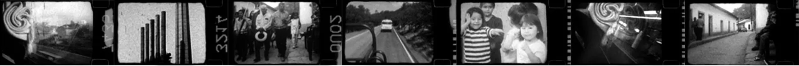

MONICA

Monica
Super-8, 16mm - 2006
Directed by
Enrico Mandirola
A matter lived in spiral that goes across time.
Images, support of a journey lived in solitary restlessness, the images slide on the screen writing their own memory. A document that tells about a place, a memory, a feeling. The space is captured at the moment in which it isappears in order to transform itself in image. Details, looks, actions, are broken up so they slide on the screen. Territory becomes a pretext to speak about oneself, to tell the story of one’s own life. Time, images, sounds and rhythms become an abstract and documental conception of movement and visions. The tool between the hands, the and, the feeling to be working with a presence that is nothing but the sliding of time. Touch and rhythm are then adapted to the body, desires, and projections of ghosts.
“The body is a balloon that a child blows to all breath...”
We do not change anything, we model a matter following a trace, we complete a process began before, goodness knows when!!
Sometimes we discover.
In the detail, we fi nd the reasons for a choice, a picture, a look. We follow the track of details?
Of traces? We are seeking without pause, but at the same time, we allow things to occur on their own. We work the second generation of images because we have created the fi rst, and third, and fourth... Which is the first?
We work the stages, a circularity in spiral. We take part physically, mechanically, repetitively.
We reproduce the action, the work, the movement, but incredibly, each time, everything returns to being new. Therefore, we do not reproduce anything, but we observe, we live, we share some photogram with the tool.
“He crosses the world as the stone crosses the water...”
The black. The transformation of light in light’s absence.
Water, liquid, the mixture of the elements in order to arrive at the layer, the level. It is not an attempt to remove or to add, but rather, to go across in order to fi nd equilibrium. It is the beginning of the instability that we can fix, that we try to fix, but that as everything : time, passage, look, will destabilize again. It does not depend on us, it’s a limit, and it ’s a limit, and it’s this limit that allows us to go on.
It is not an attempt to erase, to exceed, but to be here in each instant of the confontation. If we erase death, life does not make sense, if we achieve perfection, we are dead.
In the Laboratory i found the alchemy of time.
My images wish want to speak about this.
First of all, a place, a shelter perhaps, but a shelter to open and to be opened and not to close or to be closed.
A specifi c time does not exist, it is the temple of the job, where we are confronted with the limits of freedom, our limits.
We choose the speed, 9i, iXi, 18i... We choose the economy. We choose the colors. There is nothing new in the art that we practice,
at least not before the art, perhaps before the rest... we do not have a “place”, and we are not dislocated or ousted, unless we decide to be. We touch freedom, and it is our task to fi nd its aesthetic.
We have the image and its responsibility. If I make this choice it is simply because “it speaks to me”, because I believe, because I have the intention to defend and to create the present memory of a “generation” of images... little matter which one it is.
Screenings:
24th Torino Film Festival 2006
53th International Film Festival Oberhausen - 2007
Indipendent Film Show - 2007
TIFF 2007 - Toronto International Film Festival - WaveLenght
Mencion de Honor at Fincortex 2007 - Colombia